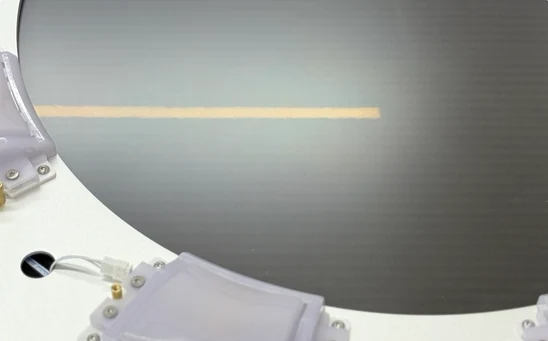
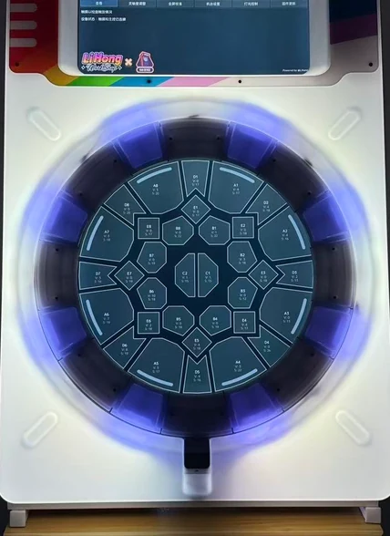
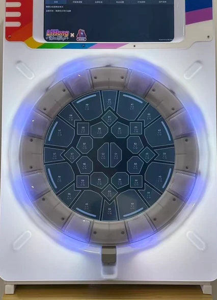
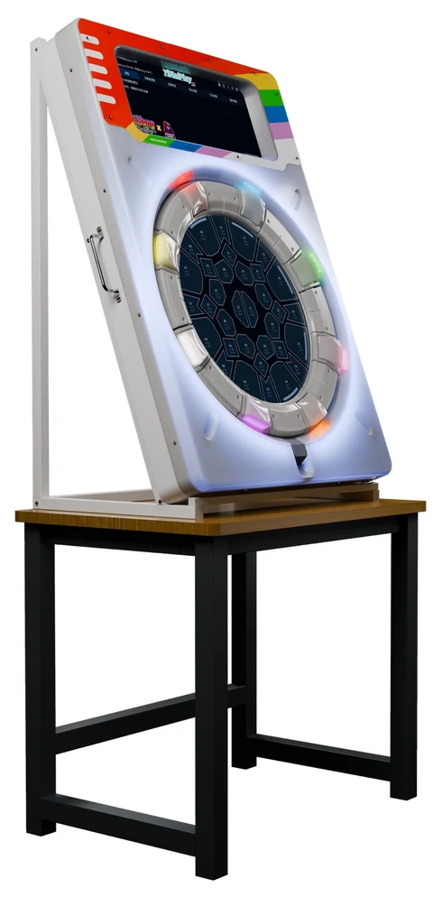
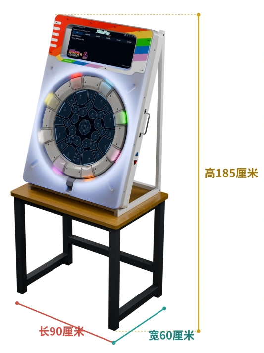

行业领先水平的触摸体验
34 个无痕触摸分区，333 Hz 触摸刷新率。ITO 玻璃采用电镀蚀刻工艺，微磨砂表面，顺手易打理。


高亮度防频闪 COB 灯带，使用 YiMaiPlay App ，色温亮度均可调。高强度塑胶一体注塑成型框体，全包防尘+++。

34 个无痕触摸分区，333 Hz 触摸刷新率。ITO 玻璃采用电镀蚀刻工艺，微磨砂表面，顺手易打理。

硬质金属板与韧性塑料共同支撑触摸模组，氧化磨砂工艺防锈。边缘圆润、贴合不刮手。

按键采用全 PC 注塑，内置 C17200 高弹性 QBe2.0 铍铜合金弹片，耐疲劳、不易震键。进口 Poron 泡棉为您提供极佳的减震体验。

机壳用全钢制作，珍珠白磨砂烤漆,耐指纹，更耐脏。背后方管支架一体焊接，以街机的高度和角度支起机身。
安装时，靠背有橡胶垫缓冲，底部有防滑垫稳住机身。
YiMaiPlay App 适配竖屏。在 App 里能切换输入模式和机位，也能调延迟、改灯光。软件和固件都会持续更新。


一大一小两个箱子，分箱发出。大箱装控制器本体、支架及配套附件，小箱装桌子。控制器本体发顺丰，桌子发物流。
器件损坏，经沟通确认后，由店主寄送维修零件。
场地与搬运。机台体积大、重量高，安装及搬动请至少两人协作，避免意外或受伤。产品占地及噪音较大，请确认场地和环境可以容纳，最好预留靠墙位置。
接线。数据线建议直连电脑主板接口，避免使用 USB Hub。电源线建议连接带地线的排插。
服务范围。本店为购买及拥有本产品的用户提供控制器相关售前、售后服务。不提供网络以及软件服务。购买产品后，我们有专门的售后社群对接售后需求。
定制与退货。本产品为定制产品，运输难度和成本较大。产品资料注明不支持七天无理由退货，请慎重考虑后购买。拍下代表您有相应的消费能力和购买意愿。未成年用户请由家长代为下单。
需自备主机或电脑。本产品仅是游戏的输入控制以及显示设备，不是一体机，不包含运行对应软件的主机或者电脑，相关信息可在咨询群中询问。
无显示器版本。请提前与客服沟通，告知使用的显示器及对应厚度。显示器背板需要定制，未确认这些信息将无法发货。
感谢您对我们产品的信任与支持！你们的认可是我们最大的前进动力！
感谢曾经参与内测的小伙伴们，不厌其烦地帮助我们进行各种测试和装配，极大地改善和打磨了产品，以及感谢各位参与到产品改进与宣传的小伙伴们。
如果您是 HDX 的购买及拥有者，提供原始购买证明即可获得优惠，详情请私聊。
如果您对我们的产品有相关意见和改善建议，可联系 LiHong。对提出有效改进建议的小伙伴们，我们会有神秘礼品赠送！
YiMaiPlay 需要听到您的声音！ @LiHong